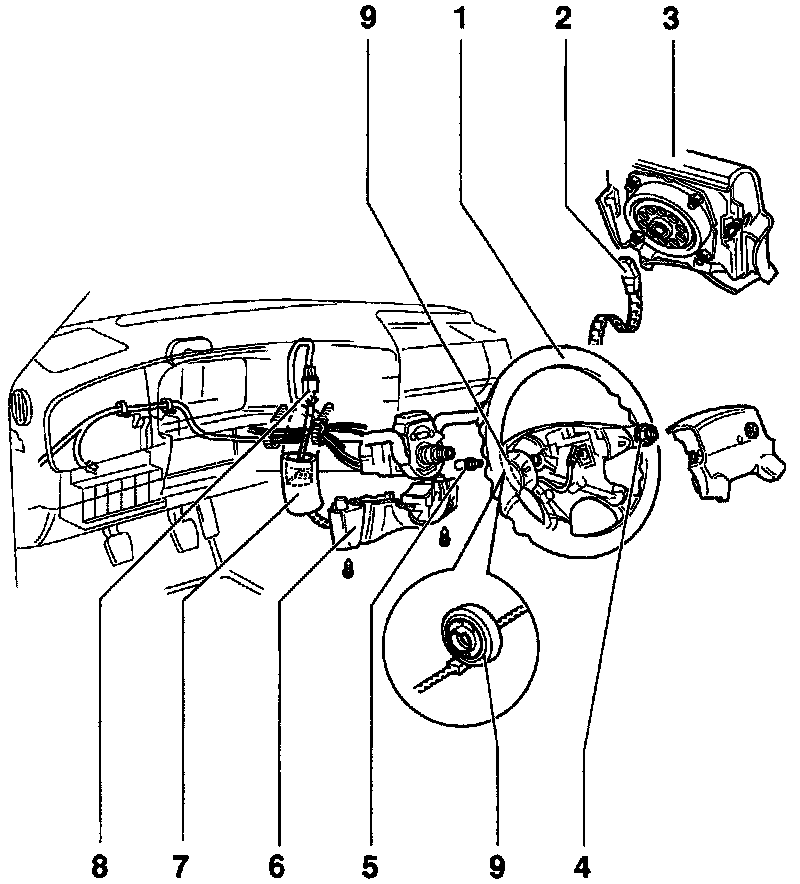

Drivers Side Air Bag
Driver's Side Airbag Unit:

1 - Steering wheel
2 - Airbag unit connector
3 - Driver's side airbag unit
4 - Hex nut: Torque 50 Nm (37 ft lb)
5 - Socket-head bolts (2) Always replace: Torque 6.5 Nm (57 in lb)
6 - Lower trim
7 - Foam tube
8 - Harness connector
9 - Airbag Spiral Spring -F138
Removing
- Disconnect battery Ground (GND) strap.
- Turn steering wheel -1- to center position (wheels in straight-ahead position).
- Remove socket-head bolts -5- : Torque 6.5 Nm (58 in lb).
- Remove airbag unit -3- from steering wheel and disconnect red connector -2- from airbag unit.
Installing
- Install in reverse order of removal.
- Tightening torque (bolts -5-): 6.5 Nm (58 in lb)
WARNING Make sure that no person is in the vehicle when reconnecting the Ground (GND) strap.
After all driver's side airbag components are installed:
- Switch ignition ON.
- Connect battery Ground (GND) strap (-).